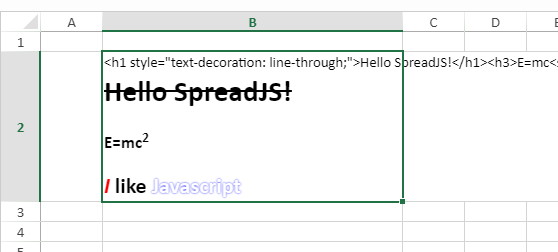

HTML是Web页面中所有元素的载体，作为前端技术人员最为熟悉、也最基础的功能，如果能跟采用了Canvas技术的SpreadJS结合使用，那这种体验一定非常美妙，简直是开启了一个为所欲为的新世界。
之前的Demo中采用了在自定义单元格的paint方法中生成图片，然后调用SpreadJS原生的canvas渲染图片的方式来实现在单元格中显示image，效果如图：
原示例链接点我查看

（图中html代码片段可以通过设置allowCellOverflow = false 来关闭显示）
这个示例的确能解决HTML渲染的问题，但是如果需要打印或者导出PDF时就没办法把渲染的内容导出来了。先说一个前提，SpreadJS的打印和导出PDF，都是“所见即所得”的，也就是说页面上的可视化元素都可以被导出PDF或输送给打印接口。这是SpreadJS的渲染机制支撑起来的功能。
但这里为什么就不灵了呢？
关键问题出在image的渲染机制上。HTML为保证页面渲染的性能，对image元素的加载都是异步的，而输出结果时SpreadJS会调用相关区域的paint方法，对这一区域执行重绘（这是canvas的机制）。而在重绘期间，image还在等待，这样就会导致输出的结果中看不到image。
那么我们干脆这样改进一下思路：
1、得到HTML片段后，在合适的时间（只要在需要显示到单元格之前）将它转为图片，并完成加载。
2、在图片加载完成的回调中，给单元格设置背景图。
3、通过自定义单元格，让单元格中的value（这里是html片段）不要显示出来。
这里利用了SpreadJS会缓存单元格背景图的机制，让我们的图片在导出时不再丢失。
关键代码如下：
1
2
3
4
5
6
7
8
9
10
11
12
13
14
15
16
17
18
19
20
21
22
23
24
25
26
27
28
| function _html2img(value, style, cell){
var svgPattern = '<svg xmlns="http://www.w3.org/2000/svg" width="{0}" height="{1}">' +
'<foreignObject width="100%" height="100%"><div xmlns="http://www.w3.org/1999/xhtml" style="font:{2}">{3}</div></foreignObject></svg>';
var w = cell.sheet.getCellRect(cell.row, cell.col).width;
var h = cell.sheet.getCellRect(cell.row, cell.col).height;
var data = svgPattern.replace("{0}", w).replace("{1}", h).replace("{2}", style.font).replace("{3}", value);
var doc = document.implementation.createHTMLDocument("");
doc.write(data);
data = (new XMLSerializer()).serializeToString(doc.body.children[0]);
img = new Image();
img.src = 'data:image/svg+xml;base64,'+window.btoa(unescape(encodeURIComponent(data)));
cell.tag(img);
img.onload = function () {
cell.cellType(new RenderHTMLTagCellType());
cell.value(value);
cell.backgroundImageLayout(GC.Spread.Sheets.ImageLayout.center);
cell.backgroundImage(img.src);
}
}
|
经过之前的分析铺垫，我们可知问题就出在img渲染是异步的问题上。以上这段代码会涉及到SpreadJS的逻辑，但主要还是集中在解决img渲染的问题上。具体逻辑可以参照注释。
完整的示例下载：demo.zip